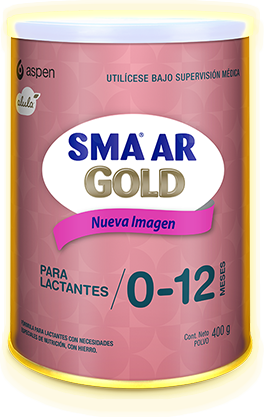
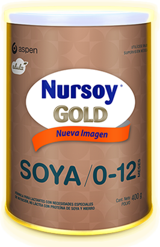

<!DOCTYPE html>
<html>
<head>
	<meta charset="UTF-8">
	<meta name="viewport" content="width=device-width, initial-scale=1,maximum-scale=1, user-scalable=no">
	<link type="text/css" rel="stylesheet" href="css/bootstrap.min.css">
	<link type="text/css" rel="stylesheet" href="css/generals.css">
	<title>Alula</title>
</head>
<body id="especiales-page">
	<section id="page-especiales-uno">
		<div class="row">
			<div class="col-md-12 animated pulse">
					<h1>Sistema de Fórmulas Especializadas Alula™</h1>
					<p>Las fórmulas especializadas Alula™ ofrecen una óptima nutrición, al mismo tiempo que ayudan
					a aliviar los síntomas más comunes de los transtornos gastrointestinales:</p>
			</div>
			<div class="col-md-12 estilo-tabla">
			<table style="width: 100%;" class="tabla-image animated pulse">
			<tbody>
				<tr>
					<td style="width: 25%;">&nbsp;</td>
					<td style="width: 25%;    text-align: center;">
						
					</td >
					<td style="width: 25%;    text-align: center;">
						
					</td>
					<td style="width: 25%;    text-align: center;">
						
					</td>
				</tr>
				<tr>
					<td style="    background: #f4fcff;">INDICACIÓN</td>
					<td style="    background: #f4fcff;">Para lactantes con intolerancia
					a la lactosa y/o episodios de diarrea asociados.</td>
					<td style="    background: #f4fcff;">(Anti regurgitación). Para lactantes con regurgitación leve a moderada.</td>
					<td style="    background: #f4fcff;">Para pacientes con alergia a
					la proteína de la leche de vaca*</td>
				</tr>
				<tr>
				<td style="    background: #fcf5f6;"><b>PRINCIPALES CARACTERISTICAS</b></td>
					<td style="    background: #fcf5f6;">∙ 60% suero - 40% caseína.
					∙ Libre de lactosa.
					∙ 100% jarabes de sólidos  de maíz.
					∙ AA, DHA, Nucleótidos, Luteína.</td>
					<td style="    background: #fcf5f6;">∙ Agente espesante de maíz.
					∙ Sin sacarosa.
					∙ AA, DHA, Nucleótidos, Luteína.</td>
					<td style="    background: #fcf5f6;">∙ 100% proteína aislada de soya.
					∙ Libre de caseína, suero.  de la leche o lactosa.
					∙ Fortificada con metionina.
					∙ AA, DHA, Nucleótidos, Luteína.</td>
				</tr>
			</tbody>
			</table>
			<p>*Con supervisión médica en mayores de 6 meses de edad con alergia mediada por lgE, sin síntomas digestivos. No usar en
			pacientes con manifestaciones gastrointestinales (enterocolitis o enteroatías).</p>
			</div>
		</div>
		<div class="logo-position fadeInDown animated">
			
		</div>
	<div id="navegacion">
		<div class="row">
			<div class="prev">
				<a href="especiales-index.html"></a>
			</div>
			<div class="home">
				<a href="index.html"></a>
			</div>
			<div class="next">
				<a href="especiales-page-one.html"></a>
			</div>
		</div>
	</div>
		
	</section>
	<script type="text/javascript" src="js/lib/framework.js"></script>
	<script type="text/javascript" src="js/generals.js"></script>
</body>
</html>